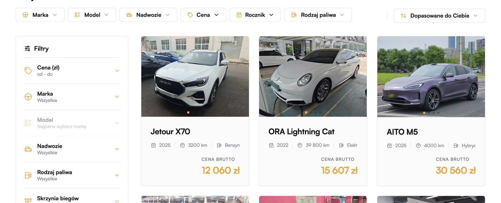
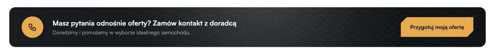
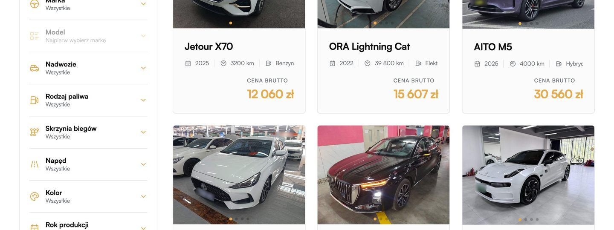
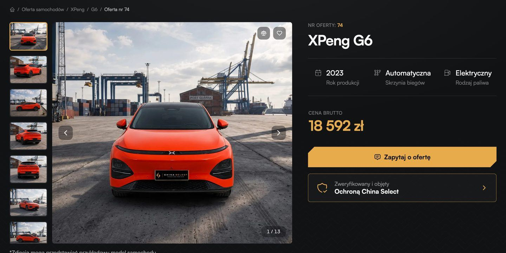

Zasady
- Jedno brzmienie CTA na całej stronie — ten sam napis przy tej samej konwersji w każdym widoku.
- Jeden przycisk główny na widok; reszta drugorzędna albo w kontekście (raport przy raporcie, finansowanie przy kalkulatorze).
- Jeden formularz na konwersję; ten sam blok zgód wszędzie; pola ukryte w każdym formularzu.
- Najlżejszy krok zawsze dostępny: kto nie chce rozmawiać, dostaje raport albo ofertę na e-mail.
- Telefon podany dobrowolnie przy kroku 1–3 + zgoda na kontakt automatyczny = lead gorący, oddzwania doradca.
Hierarchia CTA
Primary
pełny złoty przycisk ze ściętym rogiem · jeden na widok; najważniejsza konwersja w tym miejscu
Secondary
złoty obrys · druga akcja obok primary albo akcja powtarzana wiele razy na ekranie (kafle)
Tertiary
link tekstowy z ikoną i strzałką · akcja w kontekście (Policz ratę, Wyślij partnerce, Zadzwoń)
Pasek na telefonie
przyklejony na dole ekranu · primary widoku + słuchawka + WhatsApp
Strona główna
Primary
- Zobacz auta (pierwszy ekran)
- Poproś o ofertę (sekcja doradcy)
Secondary
- Zamów rozmowę (pasek kontaktu)
Tertiary
- Zamów przykładowy raport
Lista aut
Primary
- cały kafel — przejście do karty auta (bez przycisku primary na liście)
Secondary
- przycisk na kaflu (wariant A: Zamów raport — test PLP-10)
Tertiary
- baner Zamów rozmowę między rzędami
Karta auta
Primary
- Poproś o ofertę
Secondary
- Zarezerwuj to auto
- Zamów rozmowę
Tertiary
- Policz ratę
- Wyślij tę kartę partnerowi / partnerce
- Zamów raport (w sekcji raportu)
Na liście nie ma przycisku primary: przy 20 kaflach 20 pełnych przycisków to szum. Przycisk na kaflu = secondary (obrys); w wariancie z dwoma przyciskami oba są secondary.
Które przyciski w którym widoku
KONW-1
Zamów raport
Przycisk
Formularz
Pełny raport Guazi tego auta
Na stronie widzisz streszczenie. Pełny raport ma zdjęcia usterek, stan baterii i historię auta.
Administrator danych: [nazwa spółki, adres]. Dane przetwarzane w celu odpowiedzi na zapytanie. Informacja o przetwarzaniu danych (art. 13 RODO) →
- Raport sporządził Guazi podczas inspekcji w Chinach [data inspekcji]. Opisuje stan auta w dniu inspekcji. [Zakres odpowiedzialności — do decyzji prawnej]
- Wybierając WhatsApp, przekazujesz numer telefonu usłudze WhatsApp (Meta).
- Dziś pod galerią stoi „Zdjęcia mogą przedstawiać przykładowy model samochodu” — przy raporcie egzemplarza zdjęcia muszą być zdjęciami tego auta [do decyzji].
Po wysłaniu
Co dostaje kupujący
od razu: pełny raport Guazi egzemplarza (zdjęcia usterek, stan baterii SOH, historia); na stronie zostaje streszczenie
Wysyłane automatycznie (niewidoczne dla kupującego)
| konwersja | offer_request |
| id_oferty | 74 |
| model | XPeng G6 |
| strona | karta_auta |
| miejsce | blok_ceny |
| utm_source / medium / campaign | meta / paid / grupa-rodzina |
| grupa | [z kampanii lub ścieżki] |
Wartości przykładowe; „konwersja” = nazwa zdarzenia tego kroku.
Gdzie na stronie
Karta auta
sekcja raportu pod blokiem ceny (element 2)

Lista aut · kafel
przycisk secondary „Zamów raport” pod ceną — otwiera panel od dołu z formularzem (PLP-10, wariant A testu czterech wariantów); plakietka „Raport Guazi · ocena” na zdjęciu

KONW-2
Poproś o ofertę
Zastępuje dziś: „Zapytaj o ofertę”, „Przygotuj moją ofertę”, „Znajdź samochód dla mnie”
Przycisk
Formularz
Oferta na to auto na Twój e-mail
Cena do odbioru w Polsce rozpisana na składowe, termin dostawy i rata przykładowa.
Administrator danych: [nazwa spółki, adres]. Dane przetwarzane w celu odpowiedzi na zapytanie. Informacja o przetwarzaniu danych (art. 13 RODO) →
- Oferta ma charakter informacyjny i nie stanowi oferty w rozumieniu art. 66 Kodeksu cywilnego.
- Cena do odbioru wyliczona przy kursie [USD/PLN] z [data]; ostateczną cenę potwierdza umowa.
- Rata przykładowa nie jest ofertą finansowania (zastrzeżenia jak w kroku „Złóż wniosek o finansowanie”).
Wariant: Na stronie głównej zamiast pola „Auto”: „Jakie auto lub budżet?” (pole tekstowe, wymagane).
Po wysłaniu
Co dostaje kupujący
od razu na e-mail: cena do odbioru rozpisana na składowe, termin dostawy, rata przykładowa (raport — osobno, krok 2)
Wysyłane automatycznie (niewidoczne dla kupującego)
| konwersja | offer_request |
| id_oferty | 74 |
| model | XPeng G6 |
| strona | karta_auta |
| miejsce | blok_ceny |
| utm_source / medium / campaign | meta / paid / grupa-rodzina |
| grupa | [z kampanii lub ścieżki] |
Wartości przykładowe; „konwersja” = nazwa zdarzenia tego kroku.
Gdzie na stronie
Karta auta
przycisk główny w bloku ceny — zamiast „Zapytaj o ofertę”

Strona główna
sekcja „Kupujesz z osobistym doradcą” — pole „Jakie auto lub budżet?” zamiast „Znajdź samochód dla mnie”
Telefon
przycisk w pasku na dole ekranu (karta auta)
Na telefonie pasek jest zawsze widoczny na karcie auta: słuchawka (Zadzwoń teraz albo Zamów rozmowę), WhatsApp i przycisk główny „Poproś o ofertę”.
KONW-3
Zamów rozmowę
Zastępuje dziś: „Zamów kontakt z doradcą”
Przycisk
Zadzwoń (tel: link) i WhatsApp — obok przycisku, bez formularza. W pasku na telefonie ikona słuchawki otwiera wybór: „Zadzwoń teraz” albo „Zamów rozmowę”.
Formularz
Doradca China Select oddzwoni
Zostaw numer. Oddzwonimy w godzinach pracy.
Administrator danych: [nazwa spółki, adres]. Dane przetwarzane w celu odpowiedzi na zapytanie. Informacja o przetwarzaniu danych (art. 13 RODO) →
- Oddzwaniamy pn–pt [09:00–17:00]. Poza tymi godzinami — następnego dnia roboczego. [Czas oddzwonienia do ustalenia: dziś stopka mówi „w ciągu 30 minut”, cel z Rinvo — do 5 minut]
- Pierwsze połączenie może przeprowadzić asystent AI China Select. W każdej chwili możesz poprosić o rozmowę z doradcą. [obowiązek informacyjny AI Act art. 50 — do decyzji prawnej]
- Rozmowa może być nagrywana [do decyzji; jeśli tak — informacja na początku połączenia].
Po wysłaniu
Co dostaje kupujący
telefon od doradcy do 5 min (Rinvo)
Wysyłane automatycznie (niewidoczne dla kupującego)
| konwersja | offer_request |
| id_oferty | 74 |
| model | XPeng G6 |
| strona | karta_auta |
| miejsce | blok_ceny |
| utm_source / medium / campaign | meta / paid / grupa-rodzina |
| grupa | [z kampanii lub ścieżki] |
Wartości przykładowe; „konwersja” = nazwa zdarzenia tego kroku.
Gdzie na stronie
Karta auta
pasek „Masz pytania o to auto?” — zamiast „Zamów kontakt z doradcą” i „Przygotuj moją ofertę”

Strona główna
pasek kontaktu nad stopką (element 8)
Lista aut
baner między rzędami kafli

Telefon
ikona słuchawki w pasku na dole ekranu
Na telefonie pasek jest zawsze widoczny na karcie auta: słuchawka (Zadzwoń teraz albo Zamów rozmowę), WhatsApp i przycisk główny „Poproś o ofertę”.
KONW-4
Złóż wniosek o finansowanie
Przycisk
Formularz
Wniosek o finansowanie
Parametry z kalkulatora przechodzą do wniosku. Doradca wróci z kalkulacją od partnera.
Administrator danych: [nazwa spółki, adres]. Dane przetwarzane w celu odpowiedzi na zapytanie. Informacja o przetwarzaniu danych (art. 13 RODO) →
- Kalkulacja ma charakter poglądowy i nie stanowi oferty. Finansowania udziela [partner finansowy]; decyzja zależy od oceny zdolności kredytowej.
- Przy kredycie dla osoby prywatnej przykład reprezentatywny (RRSO, całkowita kwota, całkowity koszt, oprocentowanie) — [dane od partnera; wymagane przy reklamie kredytu konsumenckiego].
- Status China Select przy finansowaniu: [pośrednik / polecający — do potwierdzenia prawnego].
Po wysłaniu
Co dostaje kupujący
kontakt doradcy z kalkulacją od partnera
Wysyłane automatycznie (niewidoczne dla kupującego)
| konwersja | offer_request |
| id_oferty | 74 |
| model | XPeng G6 |
| strona | karta_auta |
| miejsce | blok_ceny |
| utm_source / medium / campaign | meta / paid / grupa-rodzina |
| grupa | [z kampanii lub ścieżki] |
Wartości przykładowe; „konwersja” = nazwa zdarzenia tego kroku.
Gdzie na stronie
Karta auta
przy cenie rata „od [X] zł / mies.” prowadzi do kalkulatora pod blokiem ceny; tam przycisk „Złóż wniosek o finansowanie” (element 13)

Lista aut · kafel
rata przy cenie prowadzi do karty auta (bez formularza na liście)
KONW-5
Zarezerwuj to auto
Przycisk
Formularz
Rezerwacja XPeng G6 · oferta nr 74
Bez płatności na stronie. Doradca zadzwoni z umową i danymi do wpłaty.
Administrator danych: [nazwa spółki, adres]. Dane przetwarzane w celu odpowiedzi na zapytanie. Informacja o przetwarzaniu danych (art. 13 RODO) →
- Rezerwacja wstępna. Auto czeka na Ciebie [X dni] od wysłania formularza; wiążąca jest dopiero wpłata [zaliczki / zadatku — decyzja SP02] według umowy.
- Zasady zwrotu wpłaty: [do decyzji prawnej]. Zadatek i zaliczka mają różne skutki przy odstąpieniu (art. 394 Kodeksu cywilnego).
- Prawo odstąpienia od umowy zawartej na odległość: [do decyzji prawnej].
Po wysłaniu
Co dostaje kupujący
telefon doradcy z umową i danymi do zaliczki
Wysyłane automatycznie (niewidoczne dla kupującego)
| konwersja | offer_request |
| id_oferty | 74 |
| model | XPeng G6 |
| strona | karta_auta |
| miejsce | blok_ceny |
| utm_source / medium / campaign | meta / paid / grupa-rodzina |
| grupa | [z kampanii lub ścieżki] |
Wartości przykładowe; „konwersja” = nazwa zdarzenia tego kroku.
Gdzie na stronie
Karta auta
drugi przycisk w bloku ceny, obok „Poproś o ofertę” — mniej wyraźny

Zastrzeżenia wspólne
- Blok zgód i klauzula informacyjna — w każdym formularzu, pola zgód domyślnie puste.
- Ceny, raty, terminy i czasy oddzwonienia w złotych polach [X] czekają na dane i decyzje China Select.
- Treść wszystkich zastrzeżeń do akceptacji prawnej przed wdrożeniem.
Wartości w nawiasach kwadratowych [X] czekają na dane i decyzje China Select. Otwarte: telefon w „Poproś o ofertę” opcjonalny? (propozycja: tak); HP: „Poproś o ofertę” bez konkretnego auta (pole „jakie auto / budżet”) czy tylko odsyłacz do listy?; SP02: zaliczka online?.